조사 조건
지역: 은평구 3·6호선·경의중앙·공항철도 역세권 (검색 결과, 조건을 충족한 인근 강서·고양·서대문 매물이 함께 포함됨)
구성: 투룸 ~ 쓰리룸
보증금: 5,000만원 이하
월세 + 관리비 합계: 150만원 미만
42 총 매물
4 은평구 내
38 인근 지역
45만~142만 월 부담 범위
27 블로그 추가 사진
전체 요약 (월 부담 합계 오름차순)
단지 주소 구분 보증금 월세 관리비 합계 룸/욕 최근 역 링크
서울시니어스가양타워(실버주택,주상복합) 강서구 등촌동 강서구 등 5000만 45만 0만 45만 2/1 월드컵경기장역(공항철도) 3847m 보기 서울시니어스가양타워(실버주택,주상복합) 강서구 등촌동 강서구 등 5000만 45만 0만 45만 2/1 월드컵경기장역(공항철도) 3847m 보기 서울시니어스가양타워(실버주택,주상복합) 강서구 등촌동 강서구 등 5000만 60만 0만 60만 2/1 월드컵경기장역(공항철도) 3847m 보기 서울시니어스가양타워(실버주택,주상복합) 강서구 등촌동 강서구 등 5000만 60만 0만 60만 2/1 월드컵경기장역(공항철도) 3847m 보기 두산 서대문구 북아현동 서대문구 300만 60만 0만 60만 3/1 월드컵경기장역(공항철도) 4657m 보기 두산 서대문구 북아현동 서대문구 300만 60만 0만 60만 3/1 월드컵경기장역(공항철도) 4700m 보기 소만1단지부영 고양시 덕양구 행신동 고양시 덕 3000만 80만 0만 80만 2/1 수색역(6·경의중앙·공항철도) 6042m 보기 행신동문 고양시 덕양구 행신동 고양시 덕 4000만 80만 0만 80만 3/1 수색역(6·경의중앙·공항철도) 6534m 보기 가양2단지성지 강서구 가양동 강서구 가 5000만 85만 0만 85만 2/1 수색역(6·경의중앙·공항철도) 4382m 보기 가양2단지성지 강서구 가양동 강서구 가 4000만 85만 0만 85만 2/1 수색역(6·경의중앙·공항철도) 4412m 보기 강변3단지 강서구 가양동 강서구 가 3000만 90만 0만 90만 2/1 월드컵경기장역(공항철도) 3973m 보기 강변3단지 강서구 가양동 강서구 가 3000만 90만 0만 90만 2/1 월드컵경기장역(공항철도) 3973m 보기 가양2단지성지 강서구 가양동 강서구 가 2000만 90만 0만 90만 2/1 수색역(6·경의중앙·공항철도) 4460m 보기 소만6단지성원 고양시 덕양구 행신동 고양시 덕 4000만 90만 0만 90만 2/1 수색역(6·경의중앙·공항철도) 5968m 보기 강변3단지 강서구 가양동 강서구 가 5000만 100만 0만 100만 2/1 월드컵경기장역(공항철도) 3851m 보기 강변3단지 강서구 가양동 강서구 가 5000만 100만 0만 100만 2/1 월드컵경기장역(공항철도) 3851m 보기 강변3단지 강서구 가양동 강서구 가 5000만 100만 0만 100만 2/1 월드컵경기장역(공항철도) 3851m 보기 강변3단지 강서구 가양동 강서구 가 5000만 100만 0만 100만 2/1 월드컵경기장역(공항철도) 3851m 보기 강변3단지 강서구 가양동 강서구 가 5000만 100만 0만 100만 2/1 월드컵경기장역(공항철도) 3851m 보기 강변3단지 강서구 가양동 강서구 가 5000만 100만 0만 100만 2/1 월드컵경기장역(공항철도) 3851m 보기 강변3단지 강서구 가양동 강서구 가 2000만 100만 0만 100만 2/1 월드컵경기장역(공항철도) 3893m 보기 가양2단지성지 강서구 가양동 강서구 가 1500만 100만 0만 100만 2/1 수색역(6·경의중앙·공항철도) 4412m 보기 서소문 서대문구 미근동 서대문구 5000만 100만 0만 100만 2/1 녹번역(3호선) 5093m 보기 모아(9-19,주상복합) 은평구 대조동 은평구 5000만 110만 0만 110만 3/1 불광역(3호선) 183m 보기 강변3단지 강서구 가양동 강서구 가 2000만 110만 0만 110만 2/1 월드컵경기장역(공항철도) 3971m 보기 신동아 은평구 응암동 은평구 5000만 120만 0만 120만 2/1 응암역(3호선) 706m 보기 한솔 은평구 갈현동 은평구 5000만 120만 0만 120만 3/1 구산역(경의중앙선) 984m 보기 남청파인힐 은평구 응암동 은평구 5000만 120만 0만 120만 3/1 여의동역(6호선) 992m 보기 강변3단지 강서구 가양동 강서구 가 2000만 120만 0만 120만 2/1 월드컵경기장역(공항철도) 3851m 보기 강변3단지 강서구 가양동 강서구 가 2000만 120만 0만 120만 2/1 월드컵경기장역(공항철도) 3851m 보기 가양2단지성지 강서구 가양동 강서구 가 3000만 120만 0만 120만 2/1 수색역(6·경의중앙·공항철도) 4362m 보기 가양2단지성지 강서구 가양동 강서구 가 2000만 120만 0만 120만 2/1 수색역(6·경의중앙·공항철도) 4382m 보기 가양2단지성지 강서구 가양동 강서구 가 2000만 120만 0만 120만 2/1 수색역(6·경의중앙·공항철도) 4382m 보기 등촌주공10단지 강서구 등촌동 강서구 등 5000만 129만 0만 129만 2/1 월드컵경기장역(공항철도) 4528m 보기 가양2단지성지 강서구 가양동 강서구 가 5000만 130만 0만 130만 2/1 수색역(6·경의중앙·공항철도) 4362m 보기 가양2단지성지 강서구 가양동 강서구 가 2000만 130만 0만 130만 2/1 수색역(6·경의중앙·공항철도) 4382m 보기 가양2단지성지 강서구 가양동 강서구 가 2000만 130만 0만 130만 2/1 수색역(6·경의중앙·공항철도) 4382m 보기 등촌주공5단지 강서구 등촌동 강서구 등 5000만 130만 0만 130만 2/1 월드컵경기장역(공항철도) 4956m 보기 해피빌 마포구 연남동 마포구 연 4000만 135만 0만 135만 2/1 월드컵경기장역(공항철도) 2247m 보기 서울시니어스가양타워(실버주택,주상복합) 강서구 등촌동 강서구 등 1000만 140만 0만 140만 2/1 월드컵경기장역(공항철도) 3847m 보기 가양2단지성지 강서구 가양동 강서구 가 3000만 140만 0만 140만 2/1 수색역(6·경의중앙·공항철도) 4382m 보기 센터스퀘어발산 강서구 내발산동 강서구 내 3000만 142만 0만 142만 2/1 월드컵경기장역(공항철도) 5322m 보기
전체 (42)
은평구 내 (4)
인근 지역 (38)
1. 모아(9-19,주상복합) 단층/14
월 110만원 보증 5000만
보증금 5000만 월세 110만원 관리비 0만원 월 부담 합계 ≈ 110만원 구성 3룸 1욕실 / 공급 49㎡ (전용 39㎡) 층 / 방향 단층/14 / 남향 입주 즉시입주 노출 기간 2026.10.14~11.13 근처 역 불광역(3호선) 183m (도보 약 3분) 난방 개별난방/도시가스 주차 38대(세대당 1) 세대 수 38세대 시공 / 용적 (주)서안주택 / 20151028 중개사 대한부동산공인중개사사무소 / 김리안
15년이내 소형평수 방세개 화장실한개
중개사 설명
※ 실사진 없음 (중개사 등록 사진 부재) — 블로그·카페에서 관련 사진 미발견
2. 신동아 단층/13
월 120만원 보증 5000만
보증금 5000만 월세 120만원 관리비 0만원 월 부담 합계 ≈ 120만원 구성 2룸 1욕실 / 공급 71㎡ (전용 53㎡) 층 / 방향 단층/13 / 남향 입주 즉시입주 노출 기간 2026.09.28~10.28 근처 역 응암역(3호선) 706m (도보 약 0분) 난방 개별난방/도시가스 주차 0대(세대당 0) 세대 수 206세대 시공 / 용적 신동아건설(주) / 19900922 중개사 신동아공인중개사사무소 / 김미정
25년이상 융자금없는 방두개 화장실한개
특징 신혼추천,수리된남향집
중개사 설명
3. 한솔 단층/15
월 120만원 보증 5000만
보증금 5000만 월세 120만원 관리비 0만원 월 부담 합계 ≈ 120만원 구성 3룸 1욕실 / 공급 86㎡ (전용 60㎡) 층 / 방향 단층/15 / 남향 입주 즉시입주 노출 기간 2026.09.28~10.28 근처 역 구산역(경의중앙선) 984m (도보 약 0분) 난방 개별난방/도시가스 주차 208대(세대당 1.07) 세대 수 193세대 시공 / 용적 한솔건설(주) / 19971209 중개사 선일공인중개사사무소 / 변정희
25년이상 화장실한개 방세개 중층
특징 탁트인 고층 뷰 방3 거실 구조 11월 13일부터 입주가능함
중개사 설명
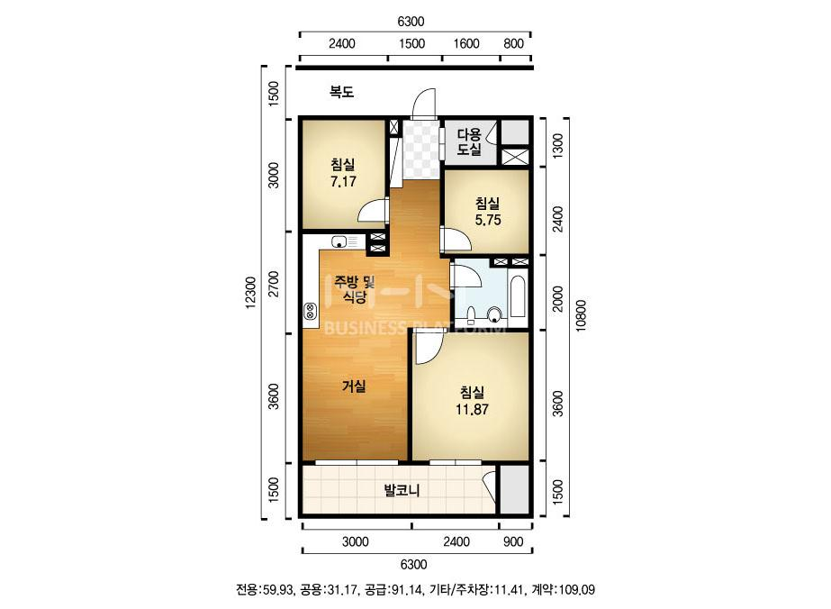
평면도 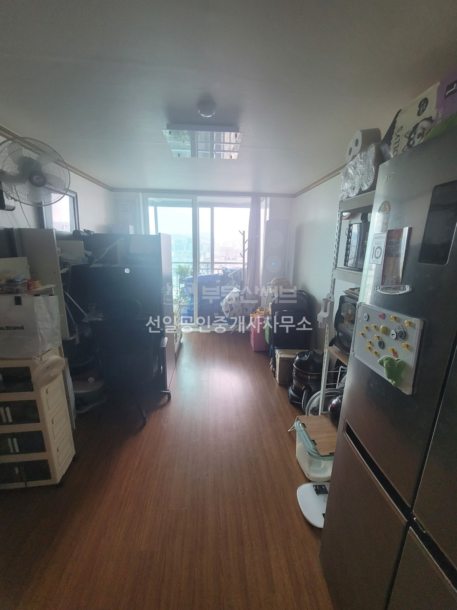
사진 1 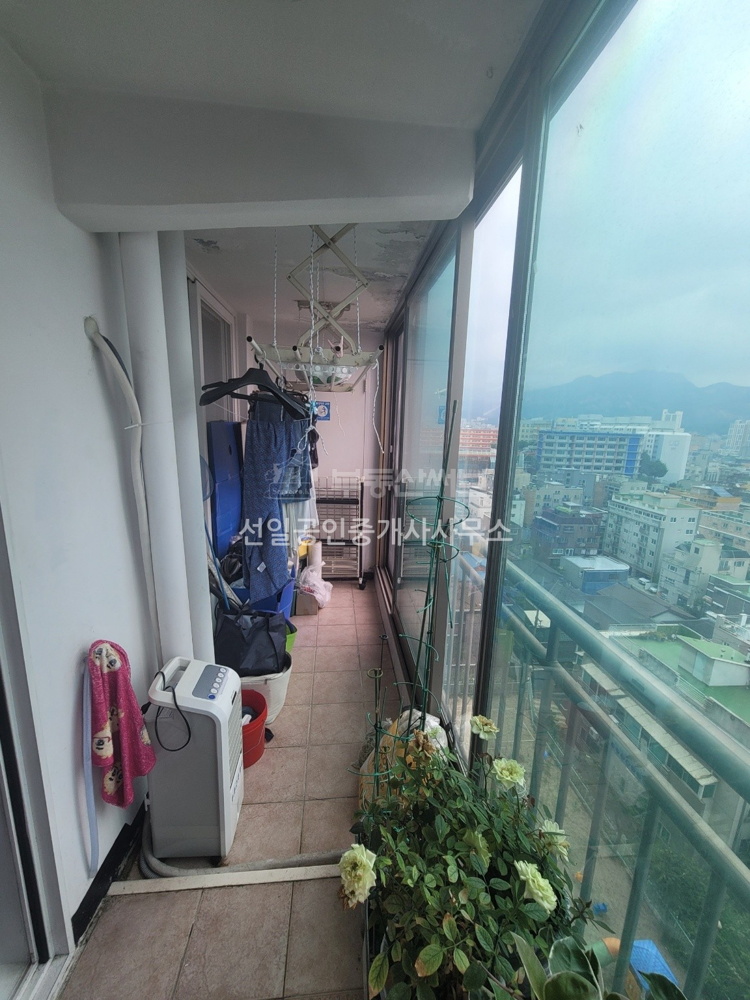
사진 2 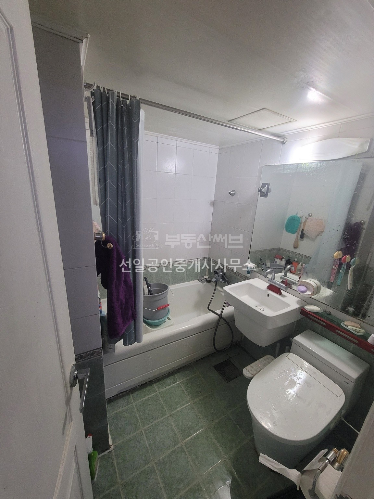
사진 3 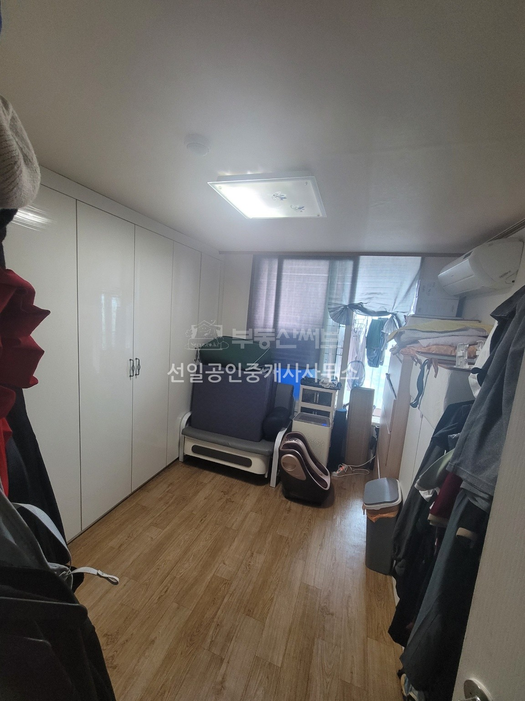
사진 4
4. 남청파인힐 단층/18
월 120만원 보증 5000만
보증금 5000만 월세 120만원 관리비 0만원 월 부담 합계 ≈ 120만원 구성 3룸 1욕실 / 공급 91㎡ (전용 61㎡) 층 / 방향 단층/18 / 동향 입주 2026년 08월 하순 노출 기간 2026.09.30~10.30 근처 역 여의동역(6호선) 992m (도보 약 15분) 난방 개별난방/도시가스 주차 70대(세대당 0.81) 세대 수 86세대 시공 / 용적 남청종합건설(주) / 20010816 중개사 대호공인중개사사무소 / 한만준
25년이상 융자금없는 방세개 화장실한개
특징 밝고 확트인전망과 조용한 환경 거실넑고 방3 깨끗함 신혼강추
중개사 설명
5. 서울시니어스가양타워(실버주택,주상복합) 단층/15
월 45만원 보증 5000만
보증금 5000만 월세 45만원 관리비 0만원 월 부담 합계 ≈ 45만원 구성 2룸 1욕실 / 공급 71㎡ (전용 50㎡) 층 / 방향 단층/15 / 동향 입주 즉시입주 노출 기간 2026.10.01~10.31 근처 역 월드컵경기장역(공항철도) 3847m (도보 약 5분) 난방 개별난방/도시가스 주차 93대(세대당 0.49) 세대 수 188세대 시공 / 용적 롯데건설(주) / 20071212 중개사 유원공인중개사사무소 / 하진솔
25년이내 융자금없는 화장실한개 방두개
특징 유원 l 컨디션 좋음 l 뷰 좋음 l 저렴한 월세
중개사 설명
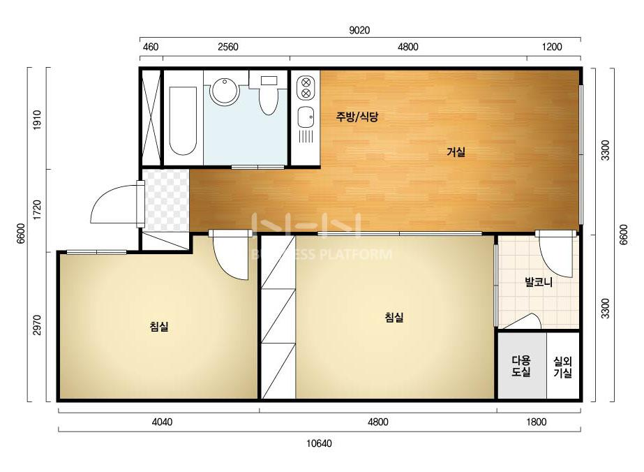
평면도 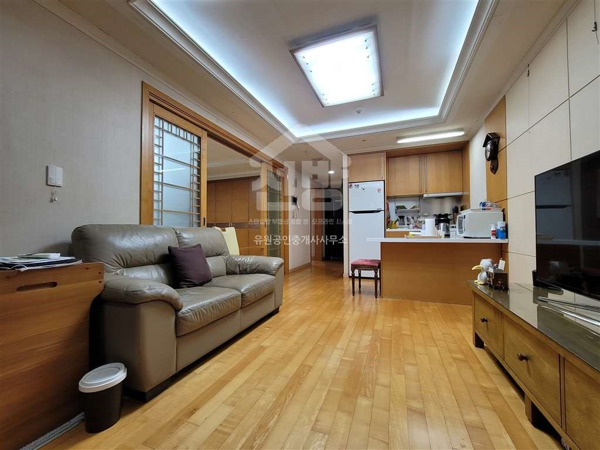
사진 1 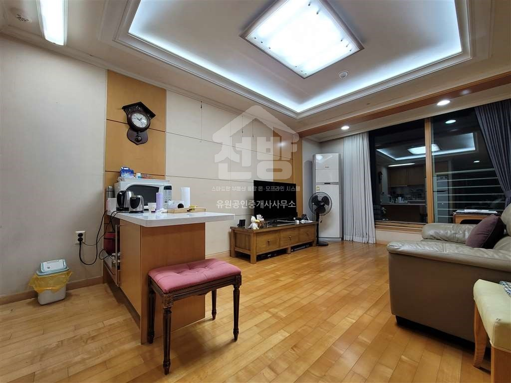
사진 2 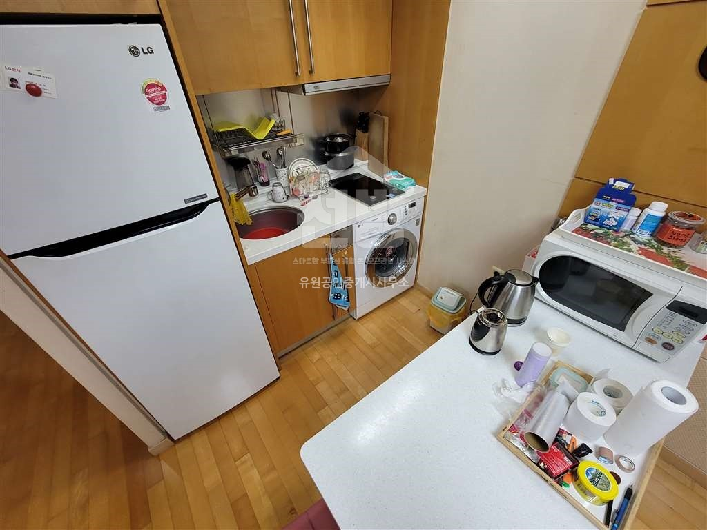
사진 3 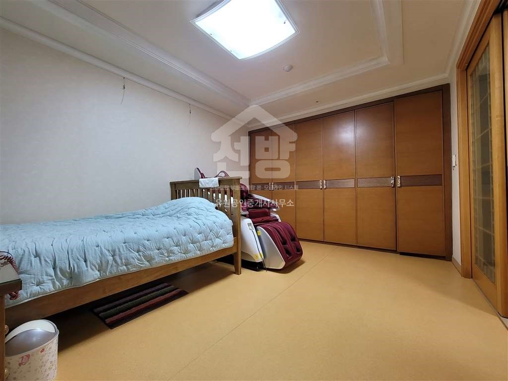
사진 4
6. 서울시니어스가양타워(실버주택,주상복합) 단층/15
월 45만원 보증 5000만
보증금 5000만 월세 45만원 관리비 0만원 월 부담 합계 ≈ 45만원 구성 2룸 1욕실 / 공급 71㎡ (전용 50㎡) 층 / 방향 단층/15 / 북동향 입주 즉시입주 노출 기간 2026.10.02~11.01 근처 역 월드컵경기장역(공항철도) 3847m (도보 약 5분) 난방 개별난방/도시가스 주차 93대(세대당 0.49) 세대 수 188세대 시공 / 용적 롯데건설(주) / 20071212 중개사 유원공인중개사사무소 / 하진솔
25년이내 화장실한개 방두개 중층
특징 유원 l 제일 저렴한 월세 호실 l 막힘 없는 호실 l 방2 화1
중개사 설명
평면도
7. 서울시니어스가양타워(실버주택,주상복합) 단층/15
월 60만원 보증 5000만
보증금 5000만 월세 60만원 관리비 0만원 월 부담 합계 ≈ 60만원 구성 2룸 1욕실 / 공급 84㎡ (전용 60㎡) 층 / 방향 단층/15 / 남향 입주 즉시입주 노출 기간 2026.10.22~11.21 근처 역 월드컵경기장역(공항철도) 3847m (도보 약 5분) 난방 개별난방/도시가스 주차 93대(세대당 0.49) 세대 수 188세대 시공 / 용적 롯데건설(주) / 20071212 중개사 유원공인중개사사무소 / 하진솔
25년이내 융자금없는 방두개 화장실한개
특징 유원 l 전용25 l 저렴한 월세 l 뷰 좋음
중개사 설명
평면도
8. 서울시니어스가양타워(실버주택,주상복합) 단층/15
월 60만원 보증 5000만
보증금 5000만 월세 60만원 관리비 0만원 월 부담 합계 ≈ 60만원 구성 2룸 1욕실 / 공급 84㎡ (전용 60㎡) 층 / 방향 단층/15 / 북동향 입주 2026년 11월 중순 노출 기간 2026.10.23~11.22 근처 역 월드컵경기장역(공항철도) 3847m (도보 약 5분) 난방 개별난방/도시가스 주차 93대(세대당 0.49) 세대 수 188세대 시공 / 용적 롯데건설(주) / 20071212 중개사 유원공인중개사사무소 / 하진솔
25년이내 방두개 화장실한개 고층
특징 60세이상거주.의료진상시대기.인프라최상.월세매물.9호선증미역.
중개사 설명
9. 두산 단층/18
월 60만원 보증 300만
보증금 300만 월세 60만원 관리비 0만원 월 부담 합계 ≈ 60만원 구성 3룸 1욕실 / 공급 82㎡ (전용 60㎡) 층 / 방향 단층/18 / 동향 입주 즉시입주 노출 기간 2026.10.14~11.13 근처 역 월드컵경기장역(공항철도) 4657m (도보 약 13분) 난방 개별난방/도시가스 주차 715대(세대당 0.74) 세대 수 956세대 시공 / 용적 두산건설(주) / 19990303 중개사 이대단지부동산공인중개사사무소 / 민재희
25년이상 방한개 화장실한개 중층
특징 작은방 1칸 쉐어하우스, 거실 주방 욕실 공용
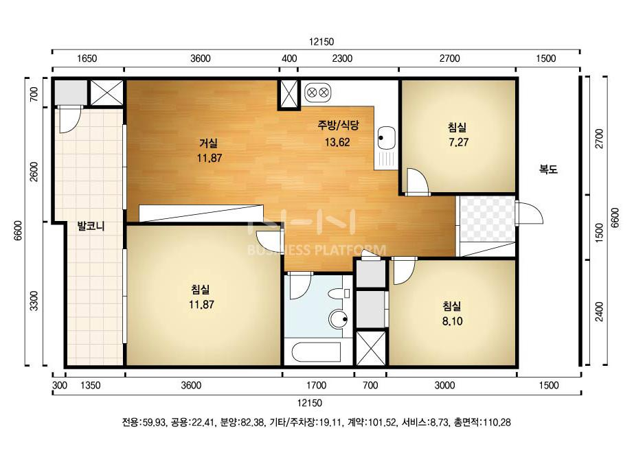
평면도 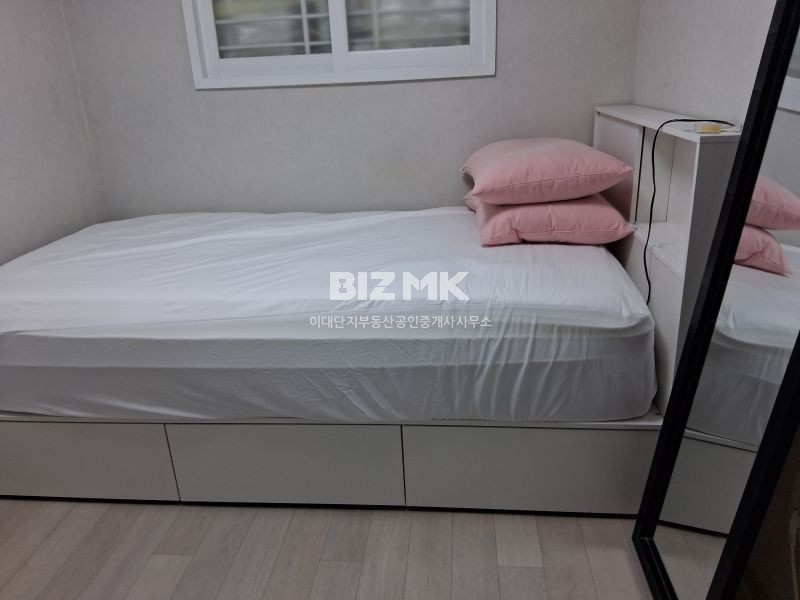
사진 1 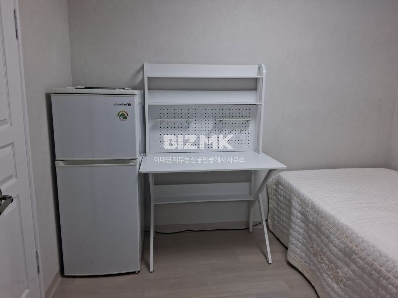
사진 2 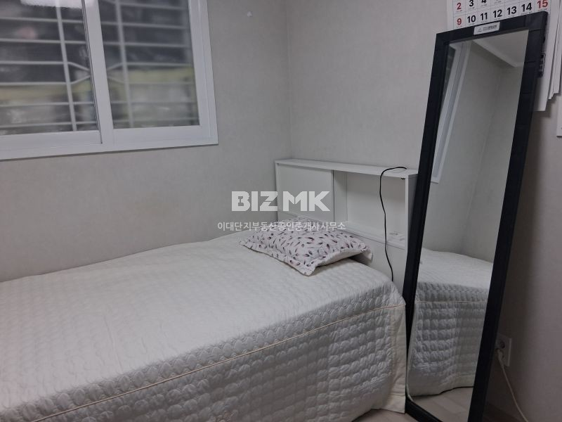
사진 3
10. 두산 단층/17
월 60만원 보증 300만
보증금 300만 월세 60만원 관리비 0만원 월 부담 합계 ≈ 60만원 구성 3룸 1욕실 / 공급 82㎡ (전용 60㎡) 층 / 방향 단층/17 / 남동향 입주 즉시입주 노출 기간 2026.10.01~10.31 근처 역 월드컵경기장역(공항철도) 4700m (도보 약 14분) 난방 개별난방/도시가스 주차 715대(세대당 0.74) 세대 수 956세대 시공 / 용적 두산건설(주) / 19990303 중개사 이대단지부동산공인중개사사무소 / 민재희
25년이상 방한개 화장실한개 저층
특징 쉐어하우스 작은방 1칸 사용, 거실 주방 욕실은 주인분과 함께 사용
평면도 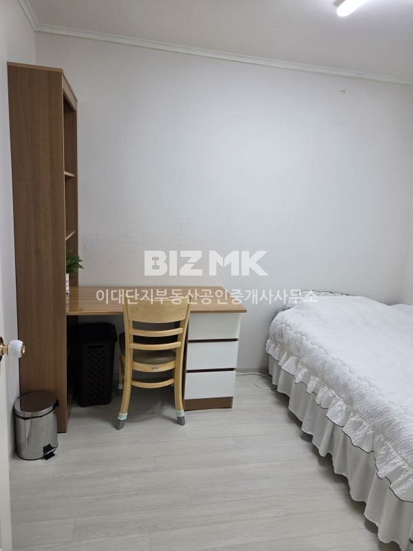
사진 1
11. 소만1단지부영 단층/15
월 80만원 보증 3000만
보증금 3000만 월세 80만원 관리비 0만원 월 부담 합계 ≈ 80만원 구성 2룸 1욕실 / 공급 62㎡ (전용 45㎡) 층 / 방향 단층/15 / 남향 입주 즉시입주 노출 기간 2026.10.23~11.22 근처 역 수색역(6·경의중앙·공항철도) 6042m (도보 약 15분) 난방 지역난방/열병합 주차 476대(세대당 0.57) 세대 수 835세대 시공 / 용적 (주)부영 / 19951219 중개사 태양부동산공인중개사사무소 / 유정민
25년이상 올수리 소형평수 방두개
특징 샷시제외 올수리된 깔끔한집
12. 행신동문 단층/20
월 80만원 보증 4000만
보증금 4000만 월세 80만원 관리비 0만원 월 부담 합계 ≈ 80만원 구성 3룸 1욕실 / 공급 86㎡ (전용 59㎡) 층 / 방향 단층/20 / 동향 입주 즉시입주 노출 기간 2026.10.22~11.21 근처 역 수색역(6·경의중앙·공항철도) 6534m (도보 약 0분) 난방 지역난방/열병합 주차 173대(세대당 1.04) 세대 수 166세대 시공 / 용적 동문건설(주) / 19981015 중개사 매경(김미량)공인중개사사무소 / 김미량
25년이상 융자금없는 방세개 화장실한개
특징 귀한월세입주협의가능
13. 가양2단지성지 단층/15
월 85만원 보증 5000만
보증금 5000만 월세 85만원 관리비 0만원 월 부담 합계 ≈ 85만원 구성 2룸 1욕실 / 공급 57㎡ (전용 40㎡) 층 / 방향 단층/15 / 남향 입주 즉시입주 노출 기간 2026.10.20~11.19 근처 역 수색역(6·경의중앙·공항철도) 4382m (도보 약 14분) 난방 지역난방/열병합 주차 873대(세대당 0.53) 세대 수 1624세대 시공 / 용적 성지건설(주) / 19921118 중개사 백마공인중개사사무소 / 오예은
25년이상 대단지 소형평수 방두개
특징 빠른 입주, 남향, 한강공원 인근, 조용, 양천향교역, 스타필드앞
평면도
14. 가양2단지성지 단층/15
월 85만원 보증 4000만
보증금 4000만 월세 85만원 관리비 0만원 월 부담 합계 ≈ 85만원 구성 2룸 1욕실 / 공급 50㎡ (전용 34㎡) 층 / 방향 단층/15 / 남향 입주 2026년 12월 초순 노출 기간 2026.10.13~11.12 근처 역 수색역(6·경의중앙·공항철도) 4412m (도보 약 14분) 난방 지역난방/열병합 주차 873대(세대당 0.53) 세대 수 1624세대 시공 / 용적 성지건설(주) / 19921118 중개사 삼성공인중개사 / 최흥식
25년이상 대단지 소형평수 탑층
특징 내부수리됨.
평면도
15. 강변3단지 단층/15
월 90만원 보증 3000만
보증금 3000만 월세 90만원 관리비 0만원 월 부담 합계 ≈ 90만원 구성 2룸 1욕실 / 공급 45㎡ (전용 34㎡) 층 / 방향 단층/15 / 남향 입주 2027년 01월 하순 노출 기간 2026.10.19~11.18 근처 역 월드컵경기장역(공항철도) 3973m (도보 약 9분) 난방 지역난방/열병합 주차 616대(세대당 0.39) 세대 수 1556세대 시공 / 용적 신일건설 / 19921202 중개사 현대공인중개사사무소 / 이점순
25년이상 올수리 확장형 대단지
특징 베란다확장올수리 남향 가양역가까워요 27년1월말경입주협의
16. 강변3단지 단층/15
월 90만원 보증 3000만
보증금 3000만 월세 90만원 관리비 0만원 월 부담 합계 ≈ 90만원 구성 2룸 1욕실 / 공급 45㎡ (전용 34㎡) 층 / 방향 단층/15 / 남서향 입주 즉시입주 노출 기간 2026.10.16~11.15 근처 역 월드컵경기장역(공항철도) 3973m (도보 약 9분) 난방 지역난방/열병합 주차 616대(세대당 0.39) 세대 수 1556세대 시공 / 용적 신일건설 / 19921202 중개사 남산공인중개사사무소 / 이옥희
25년이상 올수리 대단지 1층
특징 올수리된집,1월경말경,9호선 가양역도보5분 급행역
평면도
17. 가양2단지성지 단층/15
월 90만원 보증 2000만
보증금 2000만 월세 90만원 관리비 0만원 월 부담 합계 ≈ 90만원 구성 2룸 1욕실 / 공급 50㎡ (전용 34㎡) 층 / 방향 단층/15 / 남향 입주 즉시입주 노출 기간 2026.10.23~11.22 근처 역 수색역(6·경의중앙·공항철도) 4460m (도보 약 11분) 난방 지역난방/열병합 주차 873대(세대당 0.53) 세대 수 1624세대 시공 / 용적 성지건설(주) / 19921118 중개사 연세공인중개사사무소 / 전문옥
25년이상 대단지 소형평수 방두개
평면도
18. 소만6단지성원 단층/15
월 90만원 보증 4000만
보증금 4000만 월세 90만원 관리비 0만원 월 부담 합계 ≈ 90만원 구성 2룸 1욕실 / 공급 68㎡ (전용 50㎡) 층 / 방향 단층/15 / 동향 입주 즉시입주 노출 기간 2026.10.22~11.21 근처 역 수색역(6·경의중앙·공항철도) 5968m (도보 약 7분) 난방 지역난방/열병합 주차 829대(세대당 0.51) 세대 수 1602세대 시공 / 용적 성원건설(주) / 19950408 중개사 한강부동산공인중개사사무소 / 정현석
25년이상 대단지 방두개 화장실한개
특징 3월 중하순 입주, 신혼부부가 선호하는 방2개구조, 강매역 도보5분
중개사 설명
19. 강변3단지 단층/15
월 100만원 보증 5000만
보증금 5000만 월세 100만원 관리비 0만원 월 부담 합계 ≈ 100만원 구성 2룸 1욕실 / 공급 52㎡ (전용 40㎡) 층 / 방향 단층/15 / 남향 입주 즉시입주 노출 기간 2026.10.21~11.20 근처 역 월드컵경기장역(공항철도) 3851m (도보 약 9분) 난방 지역난방/열병합 주차 616대(세대당 0.39) 세대 수 1556세대 시공 / 용적 신일건설 / 19921202 중개사 3단지공인중개사사무소 / 오아름
25년이상 대단지 소형평수 방두개
특징 1월 입주 협의 가능, 샷시 제외 내부 수리 깨끗, 채광 밝은 남향
중개사 설명
평면도 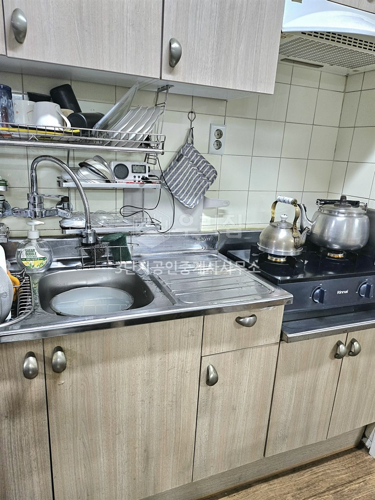
사진 1 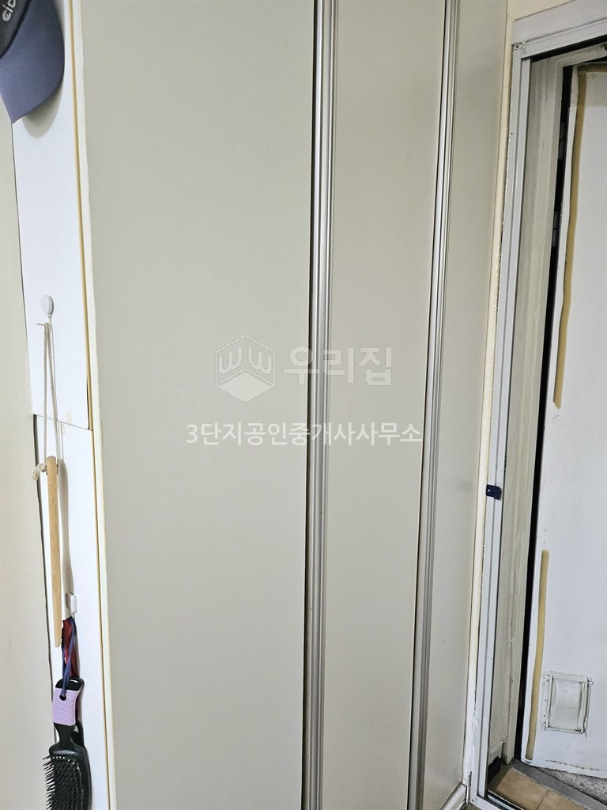
사진 2 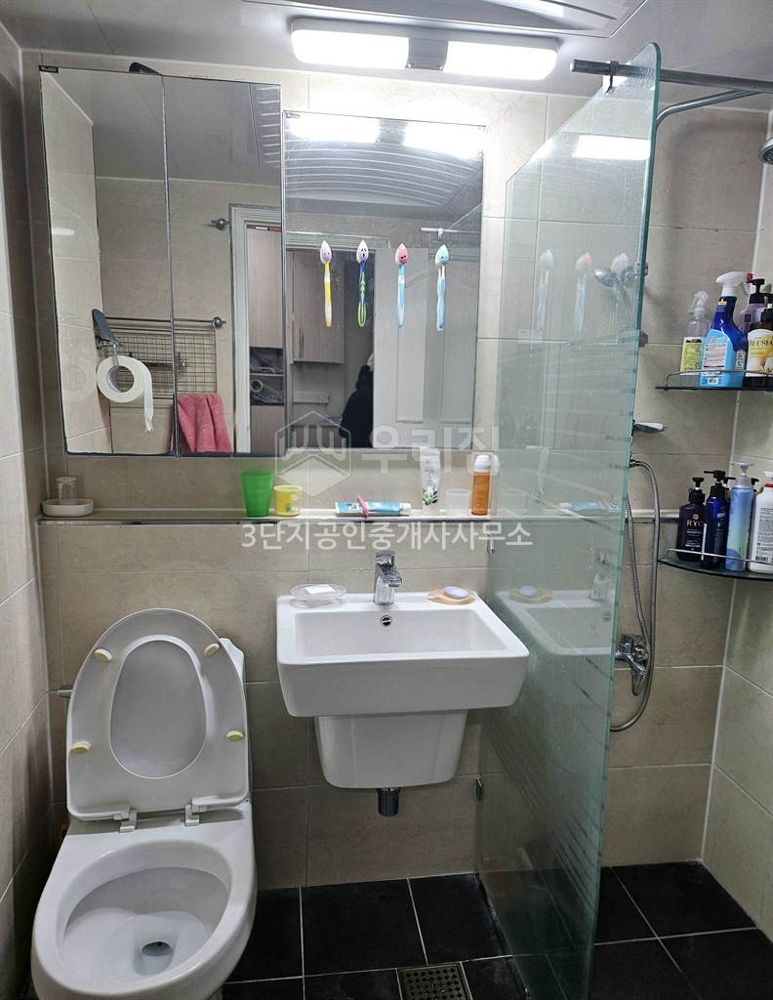
사진 3
20. 강변3단지 단층/15
월 100만원 보증 5000만
보증금 5000만 월세 100만원 관리비 0만원 월 부담 합계 ≈ 100만원 구성 2룸 1욕실 / 공급 52㎡ (전용 40㎡) 층 / 방향 단층/15 / 남향 입주 즉시입주 노출 기간 2026.10.20~11.19 근처 역 월드컵경기장역(공항철도) 3851m (도보 약 9분) 난방 지역난방/열병합 주차 616대(세대당 0.39) 세대 수 1556세대 시공 / 용적 신일건설 / 19921202 중개사 조은공인중개사사무소 / 정영순
25년이상 대단지 소형평수 방두개
특징 아주깨끗, 가양급행역세권
평면도
21. 강변3단지 단층/15
월 100만원 보증 5000만
보증금 5000만 월세 100만원 관리비 0만원 월 부담 합계 ≈ 100만원 구성 2룸 1욕실 / 공급 52㎡ (전용 40㎡) 층 / 방향 단층/15 / 남서향 입주 즉시입주 노출 기간 2026.10.16~11.15 근처 역 월드컵경기장역(공항철도) 3851m (도보 약 9분) 난방 지역난방/열병합 주차 616대(세대당 0.39) 세대 수 1556세대 시공 / 용적 신일건설 / 19921202 중개사 우성공인중개사사무소 / 홍미숙
25년이상 대단지 소형평수 방두개
특징 강변뷰 깨끗, 가양급행역세권5분거리로 교통굿 한강산로 구임공원로 이용굿임
평면도
22. 강변3단지 단층/15
월 100만원 보증 5000만
보증금 5000만 월세 100만원 관리비 0만원 월 부담 합계 ≈ 100만원 구성 2룸 1욕실 / 공급 52㎡ (전용 40㎡) 층 / 방향 단층/15 / 남서향 입주 즉시입주 노출 기간 2026.10.15~11.14 근처 역 월드컵경기장역(공항철도) 3851m (도보 약 9분) 난방 지역난방/열병합 주차 616대(세대당 0.39) 세대 수 1556세대 시공 / 용적 신일건설 / 19921202 중개사 우성공인중개사사무소 / 홍미숙
25년이상 대단지 소형평수 방두개
특징 강변뷰 깨끗, 가양급행역세권5분거리로 교통굿 한강산로 구임공원로 이용굿임
평면도
23. 강변3단지 단층/15
월 100만원 보증 5000만
보증금 5000만 월세 100만원 관리비 0만원 월 부담 합계 ≈ 100만원 구성 2룸 1욕실 / 공급 52㎡ (전용 40㎡) 층 / 방향 단층/15 / 남서향 입주 즉시입주 노출 기간 2026.10.13~11.12 근처 역 월드컵경기장역(공항철도) 3851m (도보 약 9분) 난방 지역난방/열병합 주차 616대(세대당 0.39) 세대 수 1556세대 시공 / 용적 신일건설 / 19921202 중개사 우성공인중개사사무소 / 홍미숙
25년이상 대단지 소형평수 방두개
특징 아주깨끗하며 한강뷰 1월입주협의 가양급행역세권
평면도
24. 강변3단지 단층/15
월 100만원 보증 5000만
보증금 5000만 월세 100만원 관리비 0만원 월 부담 합계 ≈ 100만원 구성 2룸 1욕실 / 공급 52㎡ (전용 40㎡) 층 / 방향 단층/15 / 남향 입주 즉시입주 노출 기간 2026.10.22~11.21 근처 역 월드컵경기장역(공항철도) 3851m (도보 약 9분) 난방 지역난방/열병합 주차 616대(세대당 0.39) 세대 수 1556세대 시공 / 용적 신일건설 / 19921202 중개사 삼부부동산공인중개사사무소 / 노수연
25년이상 대단지 화장실한개 소형평수
특징 수리된 남향집,가양대교올림픽대로교통편리,가양역9호선급행
중개사 설명
평면도
25. 강변3단지 단층/15
월 100만원 보증 2000만
보증금 2000만 월세 100만원 관리비 0만원 월 부담 합계 ≈ 100만원 구성 2룸 1욕실 / 공급 52㎡ (전용 40㎡) 층 / 방향 단층/15 / 남향 입주 2027년 02월 중순 노출 기간 2026.10.19~11.18 근처 역 월드컵경기장역(공항철도) 3893m (도보 약 11분) 난방 지역난방/열병합 주차 616대(세대당 0.39) 세대 수 1556세대 시공 / 용적 신일건설 / 19921202 중개사 현대공인중개사사무소 / 이점순
25년이상 대단지 소형평수 방두개
특징 내부수리되어 아주깨끗 일조권길고 복도한강뷰 2월15일입주협의
26. 가양2단지성지 단층/15
월 100만원 보증 1500만
보증금 1500만 월세 100만원 관리비 0만원 월 부담 합계 ≈ 100만원 구성 2룸 1욕실 / 공급 50㎡ (전용 34㎡) 층 / 방향 단층/15 / 남동향 입주 즉시입주 노출 기간 2026.10.16~11.15 근처 역 수색역(6·경의중앙·공항철도) 4412m (도보 약 14분) 난방 지역난방/열병합 주차 873대(세대당 0.53) 세대 수 1624세대 시공 / 용적 성지건설(주) / 19921118 중개사 한빛공인중개사사무소 / 송경숙
25년이상 올수리 대단지 소형평수
특징 올수리, 빠른입주가능
평면도 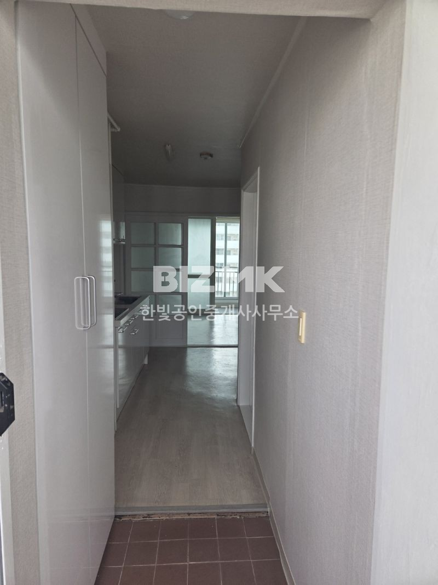
사진 1 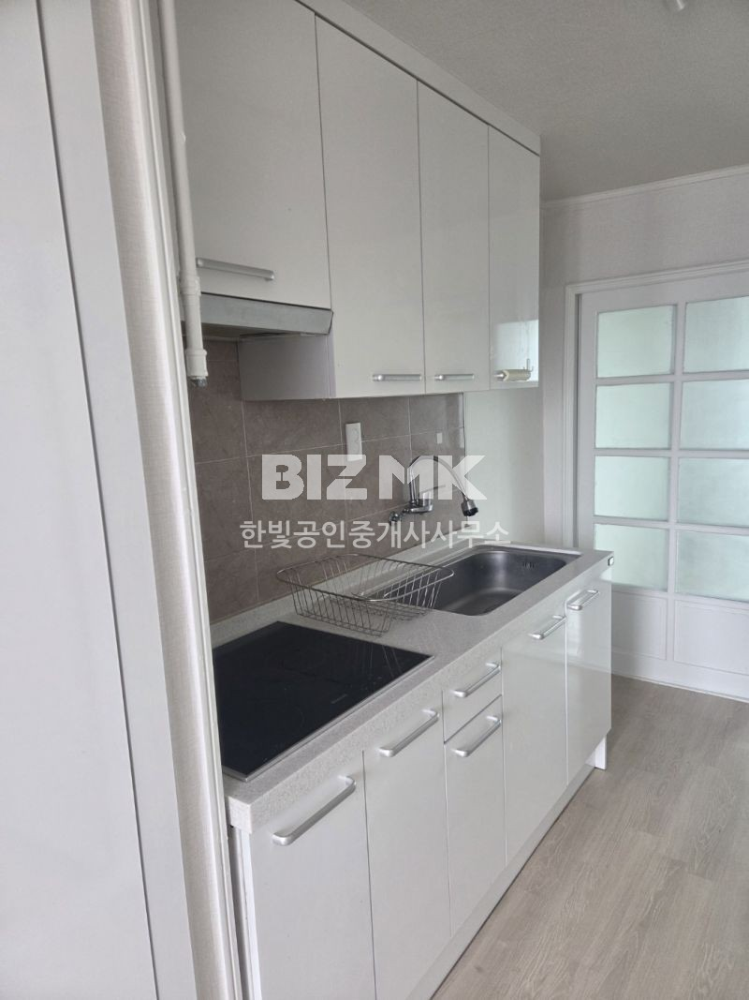
사진 2 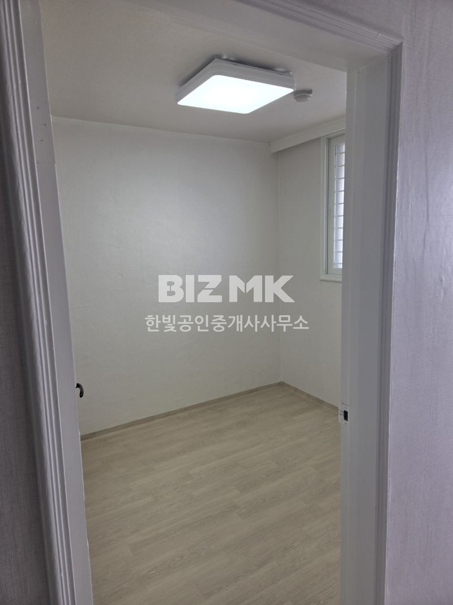
사진 3 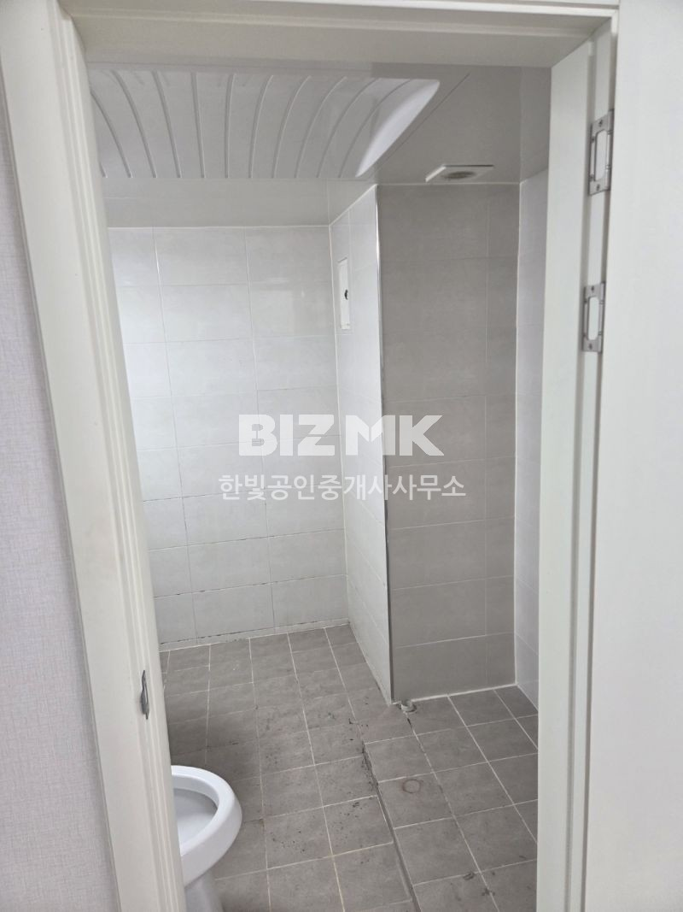
사진 4
27. 서소문 단층/7
월 100만원 보증 5000만
보증금 5000만 월세 100만원 관리비 0만원 월 부담 합계 ≈ 100만원 구성 2룸 1욕실 / 공급 49㎡ (전용 49㎡) 층 / 방향 단층/7 / 남동향 입주 즉시입주 노출 기간 2026.10.17~11.16 근처 역 녹번역(3호선) 5093m (도보 약 5분) 난방 개별난방/도시가스 주차 19대(세대당 0.17) 세대 수 108세대 시공 / 용적 오진개발 / 19710123 중개사 서울공인중개사사무소 / 김태중
25년이상 필로티 화장실한개 소형평수
특징 대로변에 가성비가 좋은,리모델링 풀옵션
중개사 설명
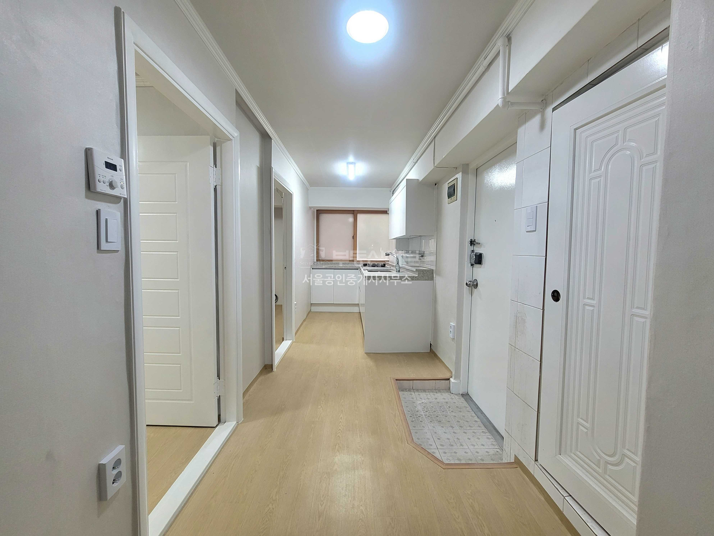
사진 1 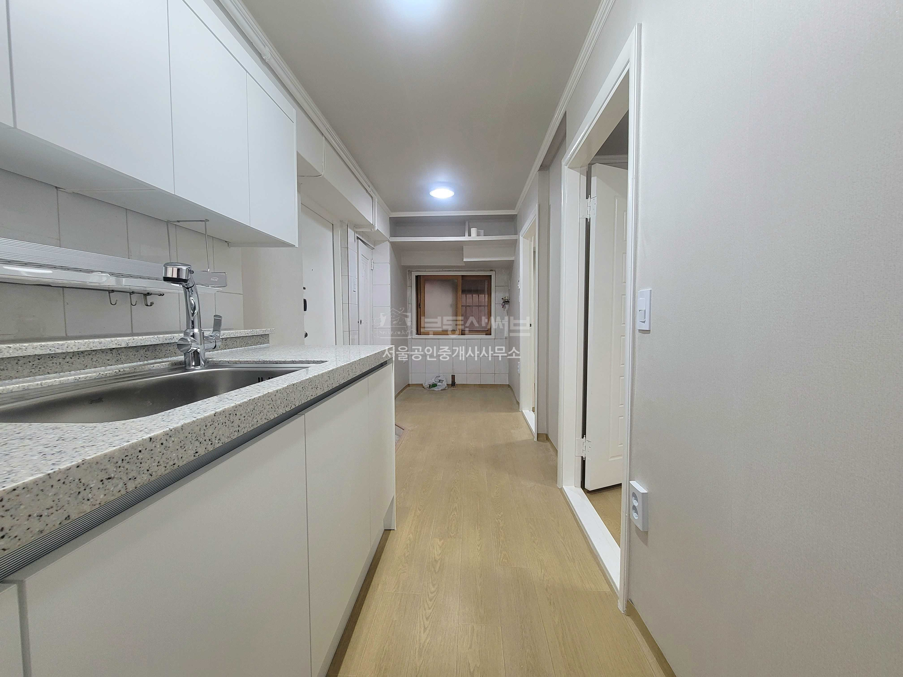
사진 2 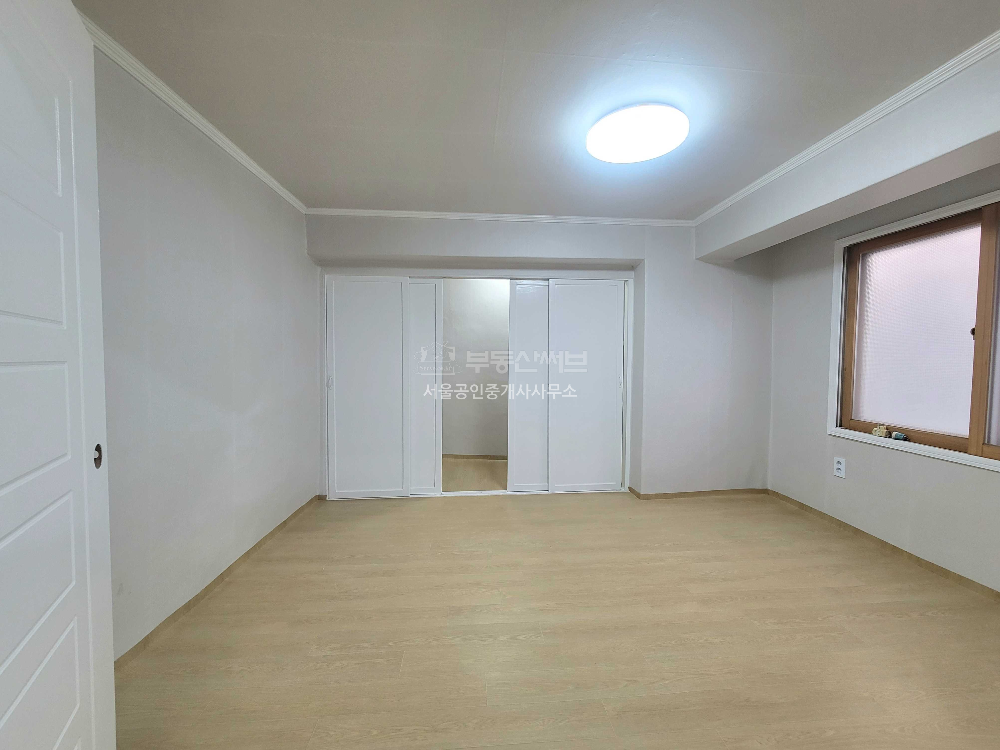
사진 3 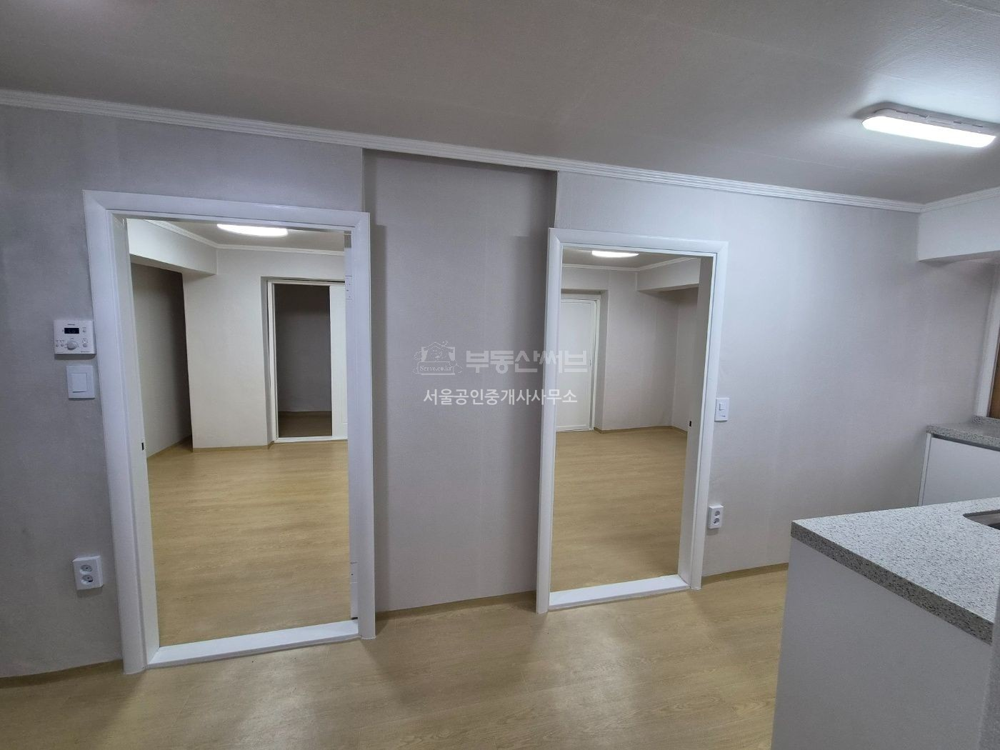
사진 4
28. 강변3단지 단층/15
월 110만원 보증 2000만
보증금 2000만 월세 110만원 관리비 0만원 월 부담 합계 ≈ 110만원 구성 2룸 1욕실 / 공급 45㎡ (전용 34㎡) 층 / 방향 단층/15 / 남동향 입주 즉시입주 노출 기간 2026.10.23~11.22 근처 역 월드컵경기장역(공항철도) 3971m (도보 약 10분) 난방 지역난방/열병합 주차 616대(세대당 0.39) 세대 수 1556세대 시공 / 용적 신일건설 / 19921202 중개사 한빛공인중개사사무소 / 송경숙
25년이상 올수리 대단지 소형평수
특징 샷시포함 전체올수리,풀옵션,전입안하는조건 1년만 계약조건임
평면도 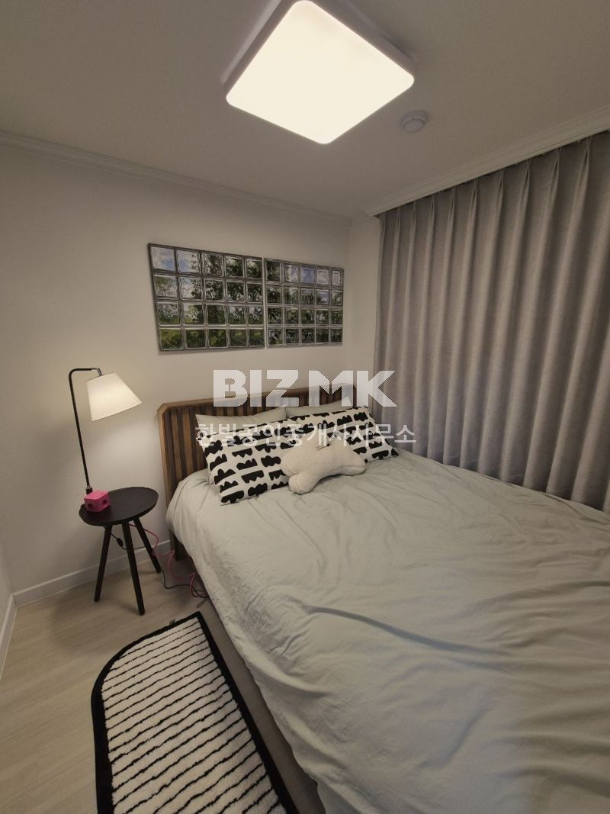
사진 1 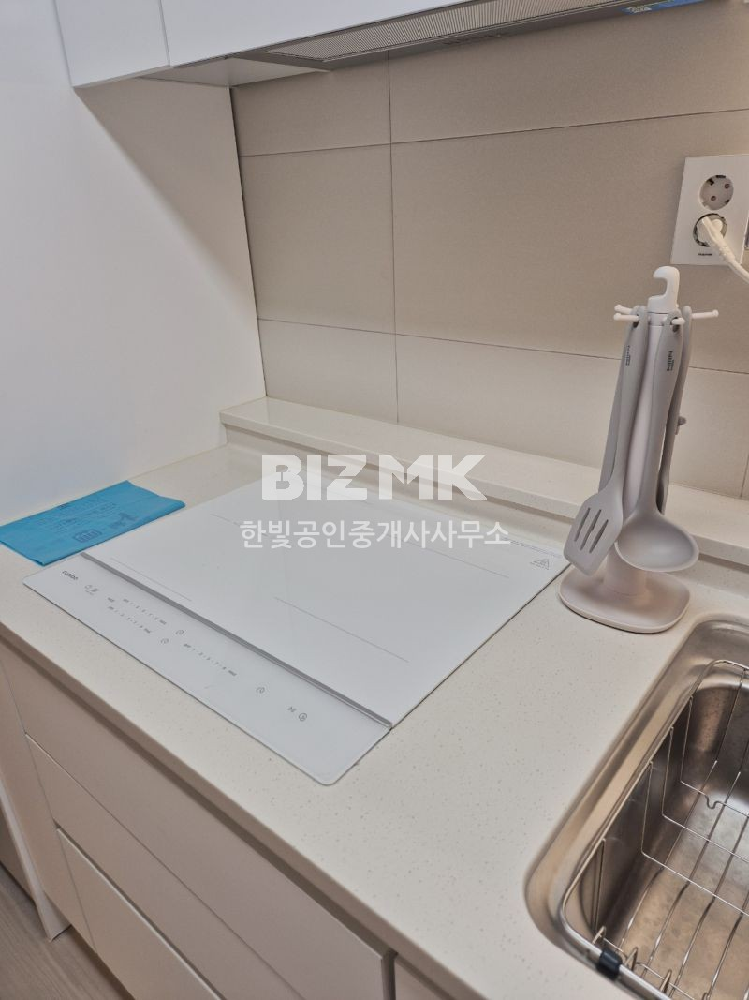
사진 2 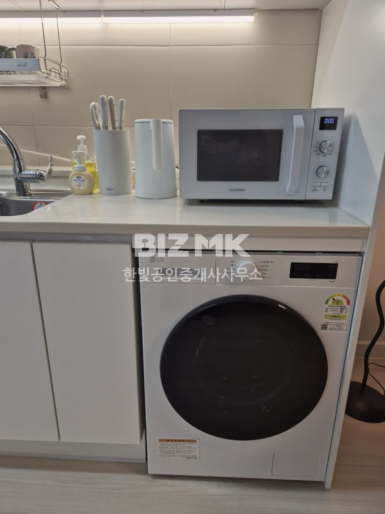
사진 3 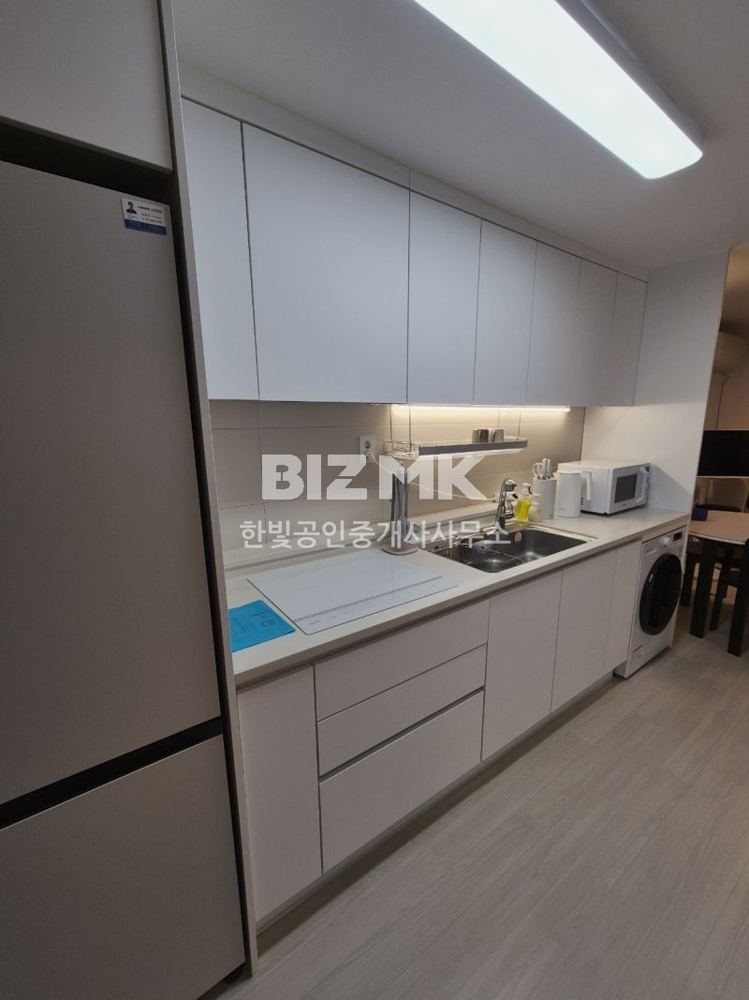
사진 4
29. 강변3단지 단층/15
월 120만원 보증 2000만
보증금 2000만 월세 120만원 관리비 0만원 월 부담 합계 ≈ 120만원 구성 2룸 1욕실 / 공급 52㎡ (전용 40㎡) 층 / 방향 단층/15 / 남서향 입주 2026년 12월 하순 노출 기간 2026.10.20~11.19 근처 역 월드컵경기장역(공항철도) 3851m (도보 약 9분) 난방 지역난방/열병합 주차 616대(세대당 0.39) 세대 수 1556세대 시공 / 용적 신일건설 / 19921202 중개사 현대공인중개사사무소 / 이점순
25년이상 대단지 소형평수 방두개
특징 수리되어 깨끗 복도한강뷰 입주협의
평면도
30. 강변3단지 단층/15
월 120만원 보증 2000만
보증금 2000만 월세 120만원 관리비 0만원 월 부담 합계 ≈ 120만원 구성 2룸 1욕실 / 공급 52㎡ (전용 40㎡) 층 / 방향 단층/15 / 남향 입주 2026년 12월 하순 노출 기간 2026.10.19~11.18 근처 역 월드컵경기장역(공항철도) 3851m (도보 약 9분) 난방 지역난방/열병합 주차 616대(세대당 0.39) 세대 수 1556세대 시공 / 용적 신일건설 / 19921202 중개사 백마공인중개사사무소 / 오예은
25년이상 올수리 대단지 소형평수
특징 내부 올수리, 9호선가양역역세권, 조용, 남향, 입주협의
평면도
31. 가양2단지성지 단층/15
월 120만원 보증 3000만
보증금 3000만 월세 120만원 관리비 0만원 월 부담 합계 ≈ 120만원 구성 2룸 1욕실 / 공급 57㎡ (전용 40㎡) 층 / 방향 단층/15 / 남향 입주 즉시입주 노출 기간 2026.10.16~11.15 근처 역 수색역(6·경의중앙·공항철도) 4362m (도보 약 15분) 난방 지역난방/열병합 주차 873대(세대당 0.53) 세대 수 1624세대 시공 / 용적 성지건설(주) / 19921118 중개사 중앙공인중개사사무소 / 김경아
25년이상 올수리 대단지 소형평수
특징 샷시포함올수리
평면도
32. 가양2단지성지 단층/15
월 120만원 보증 2000만
보증금 2000만 월세 120만원 관리비 0만원 월 부담 합계 ≈ 120만원 구성 2룸 1욕실 / 공급 57㎡ (전용 40㎡) 층 / 방향 단층/15 / 남향 입주 즉시입주 노출 기간 2026.10.10~11.09 근처 역 수색역(6·경의중앙·공항철도) 4382m (도보 약 14분) 난방 지역난방/열병합 주차 873대(세대당 0.53) 세대 수 1624세대 시공 / 용적 성지건설(주) / 19921118 중개사 씨티공인중개사사무소 / 김규림
25년이상 올수리 대단지 소형평수
특징 역세권 한강뷰있는 샷시올수리 산책로바로앞
중개사 설명
평면도
33. 가양2단지성지 단층/15
월 120만원 보증 2000만
보증금 2000만 월세 120만원 관리비 0만원 월 부담 합계 ≈ 120만원 구성 2룸 1욕실 / 공급 57㎡ (전용 40㎡) 층 / 방향 단층/15 / 남서향 입주 즉시입주 노출 기간 2026.10.12~11.11 근처 역 수색역(6·경의중앙·공항철도) 4382m (도보 약 14분) 난방 지역난방/열병합 주차 873대(세대당 0.53) 세대 수 1624세대 시공 / 용적 성지건설(주) / 19921118 중개사 신세계공인중개사사무소 / 진경숙
25년이상 올수리 대단지 소형평수
특징 샤시포함올수리 한강조망권 9호선역세권
중개사 설명
34. 등촌주공10단지 단층/15
월 129만원 보증 5000만
보증금 5000만 월세 129만원 관리비 0만원 월 부담 합계 ≈ 129만원 구성 2룸 1욕실 / 공급 56㎡ (전용 38㎡) 층 / 방향 단층/15 / 남서향 입주 즉시입주 노출 기간 2026.10.17~11.16 근처 역 월드컵경기장역(공항철도) 4528m (도보 약 7분) 난방 지역난방/열병합 주차 385대(세대당 0.68) 세대 수 566세대 시공 / 용적 (주)거성건설 / 19951010 중개사 한강공인중개사사무소 / 권오성
25년이상 융자금없는 욕실수리 소형평수
특징 빠른입주 화장실수리예정가양9호선급행역이용가능,초등학군최고
중개사 설명
35. 가양2단지성지 단층/15
월 130만원 보증 5000만
보증금 5000만 월세 130만원 관리비 0만원 월 부담 합계 ≈ 130만원 구성 2룸 1욕실 / 공급 50㎡ (전용 34㎡) 층 / 방향 단층/15 / 남동향 입주 즉시입주 노출 기간 2026.10.21~11.20 근처 역 수색역(6·경의중앙·공항철도) 4362m (도보 약 15분) 난방 지역난방/열병합 주차 873대(세대당 0.53) 세대 수 1624세대 시공 / 용적 성지건설(주) / 19921118 중개사 씨티공인중개사사무소 / 김규림
25년이상 올수리 대단지 소형평수
특징 역세권 확장특올수리 로얄층동 한강산책로 추천
중개사 설명
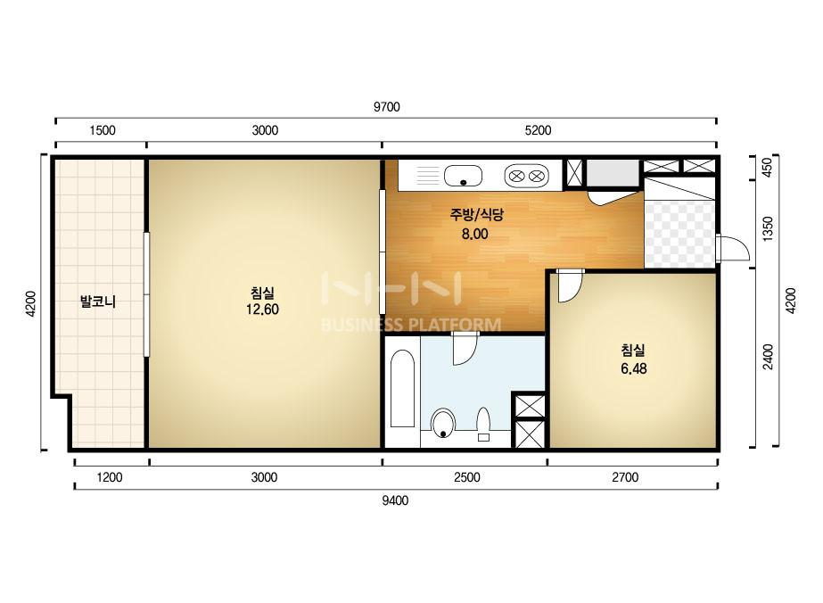
평면도 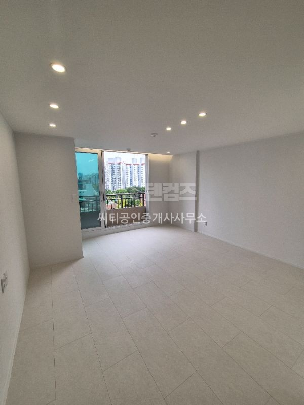
사진 1 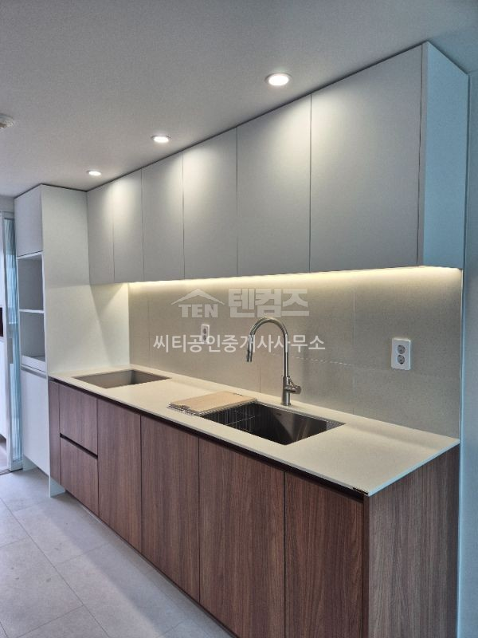
사진 2 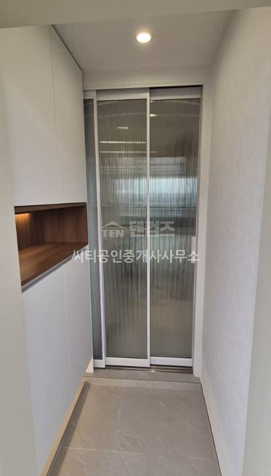
사진 3 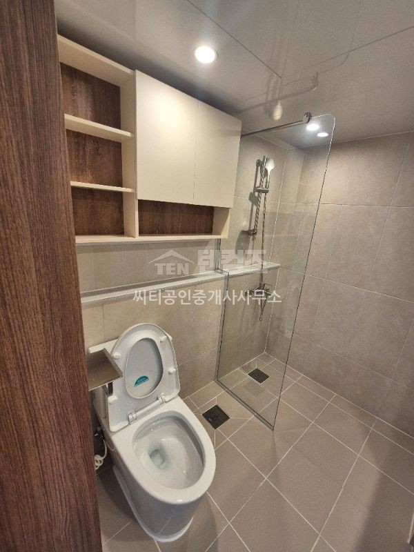
사진 4
36. 가양2단지성지 단층/15
월 130만원 보증 2000만
보증금 2000만 월세 130만원 관리비 0만원 월 부담 합계 ≈ 130만원 구성 2룸 1욕실 / 공급 57㎡ (전용 40㎡) 층 / 방향 단층/15 / 남향 입주 즉시입주 노출 기간 2026.10.01~10.31 근처 역 수색역(6·경의중앙·공항철도) 4382m (도보 약 14분) 난방 지역난방/열병합 주차 873대(세대당 0.53) 세대 수 1624세대 시공 / 용적 성지건설(주) / 19921118 중개사 늘푸른부동산공인중개사사무소 / 김정숙
25년이상 융자금없는 올수리 대단지
특징 샷시 포함 전체 올 수리, 한강 근린 공원 인접
평면도
37. 가양2단지성지 단층/15
월 130만원 보증 2000만
보증금 2000만 월세 130만원 관리비 0만원 월 부담 합계 ≈ 130만원 구성 2룸 1욕실 / 공급 57㎡ (전용 40㎡) 층 / 방향 단층/15 / 남서향 입주 즉시입주 노출 기간 2026.09.30~10.30 근처 역 수색역(6·경의중앙·공항철도) 4382m (도보 약 14분) 난방 지역난방/열병합 주차 873대(세대당 0.53) 세대 수 1624세대 시공 / 용적 성지건설(주) / 19921118 중개사 한아름부동산공인중개사사무소 / 박윤희
25년이상 올수리 대단지 소형평수
특징 샷시포함 올수리 올림픽대로진입바로 9호선도보이용
평면도
38. 등촌주공5단지 단층/15
월 130만원 보증 5000만
보증금 5000만 월세 130만원 관리비 0만원 월 부담 합계 ≈ 130만원 구성 2룸 1욕실 / 공급 55㎡ (전용 38㎡) 층 / 방향 단층/15 / 남서향 입주 즉시입주 노출 기간 2026.10.12~11.11 근처 역 월드컵경기장역(공항철도) 4956m (도보 약 12분) 난방 지역난방/열병합 주차 646대(세대당 0.61) 세대 수 1045세대 시공 / 용적 (주)라이프종건,(주)두산개발 / 19951010 중개사 진성공인중개사사무소 / 박현주
25년이상 올수리 대단지 소형평수
특징 올수리, 남향, 로얄동로얄층, 주변생활편의시설좋음
중개사 설명
39. 해피빌 단층/4
월 135만원 보증 4000만
보증금 4000만 월세 135만원 관리비 0만원 월 부담 합계 ≈ 135만원 구성 2룸 1욕실 / 공급 58㎡ (전용 51㎡) 층 / 방향 단층/4 / 남서향 입주 즉시입주 노출 기간 2026.10.16~11.15 근처 역 월드컵경기장역(공항철도) 2247m (도보 약 11분) 난방 개별난방/도시가스 주차 8대(세대당 0.66) 세대 수 12세대 시공 / 용적 - / 20011127 중개사 집토스부동산중개마포본점 / 김진아
25년이내 소형평수 탑층 방두개
특징 연남동거실, 베란다진짜 넓은즉시입주주차
중개사 설명
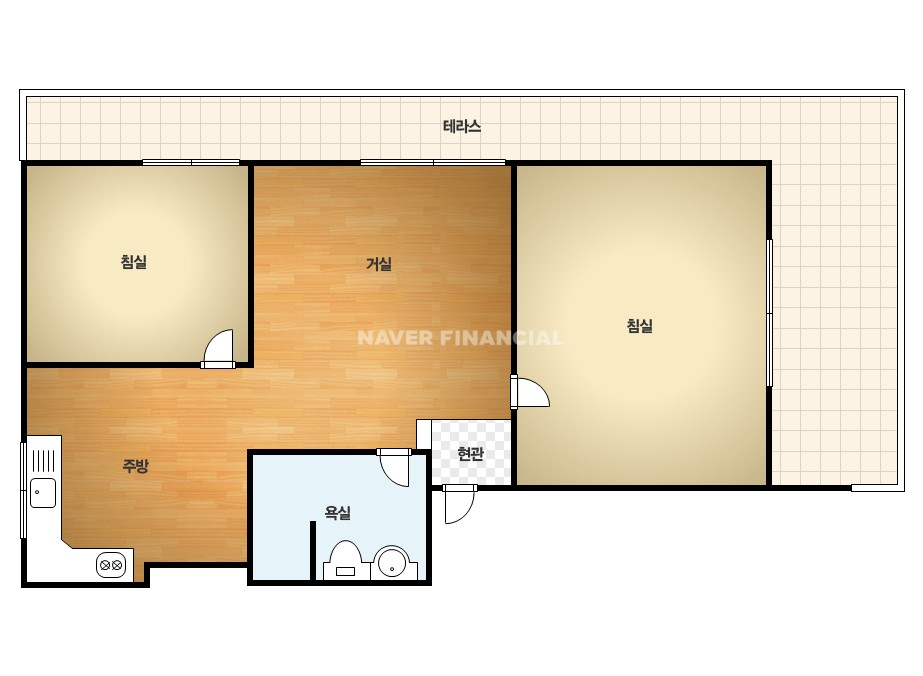
평면도 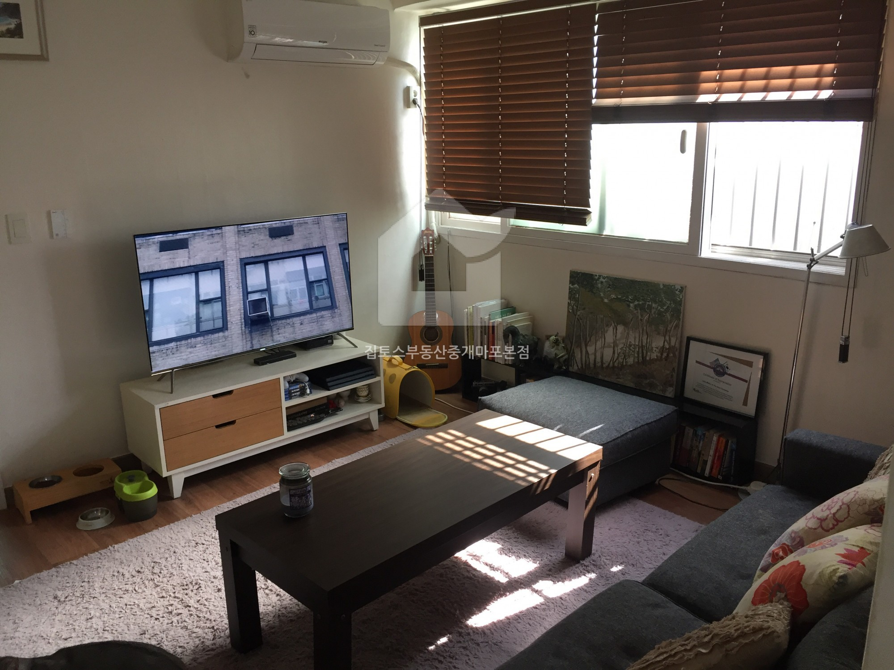
사진 1 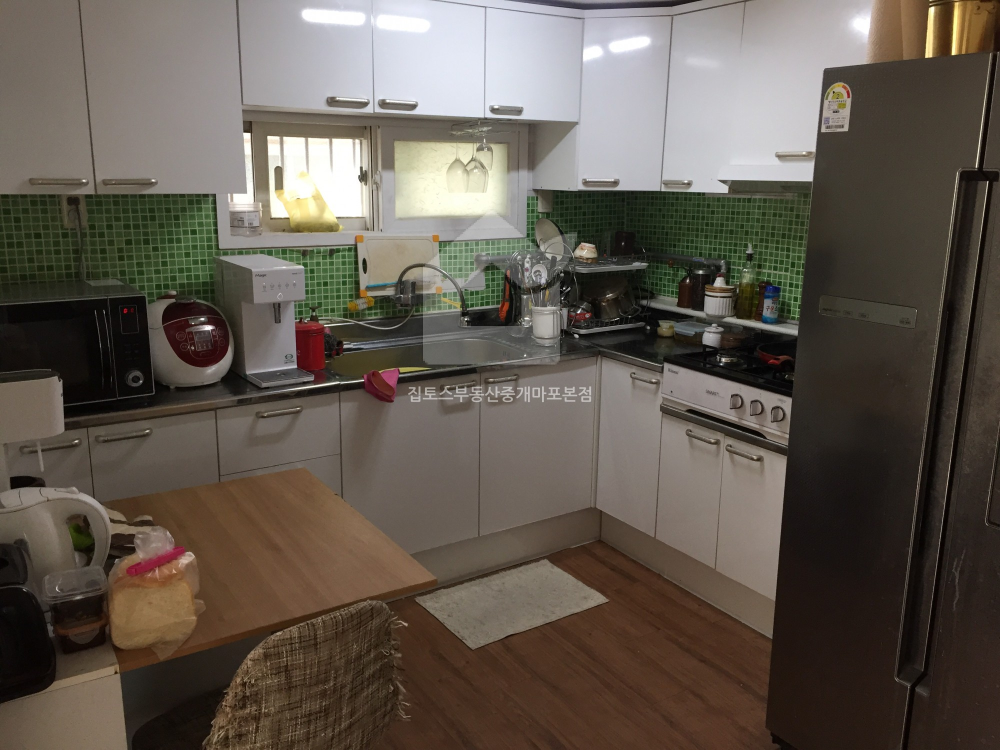
사진 2 사진 3 사진 4
40. 서울시니어스가양타워(실버주택,주상복합) 단층/15
월 140만원 보증 1000만
보증금 1000만 월세 140만원 관리비 0만원 월 부담 합계 ≈ 140만원 구성 2룸 1욕실 / 공급 71㎡ (전용 50㎡) 층 / 방향 단층/15 / 북서향 입주 즉시입주 노출 기간 2026.10.15~11.14 근처 역 월드컵경기장역(공항철도) 3847m (도보 약 5분) 난방 개별난방/도시가스 주차 93대(세대당 0.49) 세대 수 188세대 시공 / 용적 롯데건설(주) / 20071212 중개사 코오롱유성공인중개사사무소 / 김성혜
25년이내 화장실한개 방두개 중층
특징 추천 역세권위치, 관리시스템,상태 좋은 실버타운
중개사 설명
평면도
41. 가양2단지성지 단층/15
월 140만원 보증 3000만
보증금 3000만 월세 140만원 관리비 0만원 월 부담 합계 ≈ 140만원 구성 2룸 1욕실 / 공급 57㎡ (전용 40㎡) 층 / 방향 단층/15 / 남서향 입주 즉시입주 노출 기간 2026.10.05~11.04 근처 역 수색역(6·경의중앙·공항철도) 4382m (도보 약 14분) 난방 지역난방/열병합 주차 873대(세대당 0.53) 세대 수 1624세대 시공 / 용적 성지건설(주) / 19921118 중개사 힐스테이트강서탑공인중개사사무소 / 이미영
25년이상 올수리 대단지 소형평수
특징 샷시까지 올수리됨,오래거주 할수 있음
평면도
42. 센터스퀘어발산 단층/17
월 142만원 보증 3000만
보증금 3000만 월세 142만원 관리비 0만원 월 부담 합계 ≈ 142만원 구성 2룸 1욕실 / 공급 72㎡ (전용 48㎡) 층 / 방향 단층/17 / 남향 입주 2026년 12월 중순 노출 기간 2026.10.23~11.22 근처 역 월드컵경기장역(공항철도) 5322m (도보 약 4분) 난방 개별난방/도시가스 주차 401대(세대당 0.56) 세대 수 716세대 시공 / 용적 요진건설산업(주) / 20250327 중개사 대명공인중개사사무소 / 윤희
2년이내 화장실한개 방두개 중층
특징 넓은 투룸 자주식지하주차장 역세권단지아파트 커뮤니티굿 보증보험가능
중개사 설명
평면도 사진 1 사진 2 사진 3 사진 4
참고 사항
'월 부담 합계' = 월세 + 매물 상세의 기타 관리비. 실제 관리비·입주 조건은 중개사와 확인 필요합니다.
사진·평면도는 매물 등록 시점 네이버 부동산 기준이며, 중개사 실사진이 없는 매물은 평면도만 표시됩니다.
중개사 실사진이 없는 매물 중 8개 단지는 네이버 블로그 검색으로 단지·실내 사진을 추가 확보했습니다('단지 사진(네이버 블로그 검색)' 섹션, 각 이미지 아래 원본 포스트 링크 기재).
블로그 사진은 해당 단지의 외관·공통 사진일 수 있으며, 특정 호수의 실내는 아닙니다. 모아·신동아·소만1 단지는 관련 사진이 발견되지 않았습니다.
중개사 연락처는 네이버 부동산 매물 페이지(각 '네이버 부동산 매물 보기' 링크)에서 확인할 수 있습니다.
본 자료는 2026-10-24 시점 네이버 부동산 API 기준이며, 이후 가격·노출 변경 가능합니다.